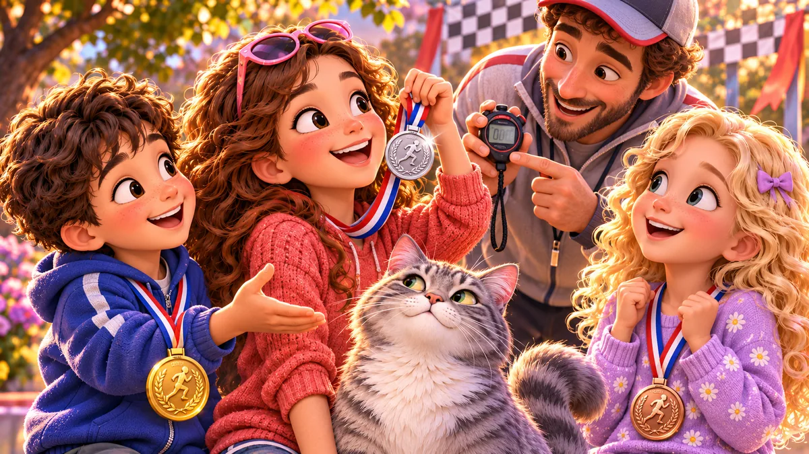
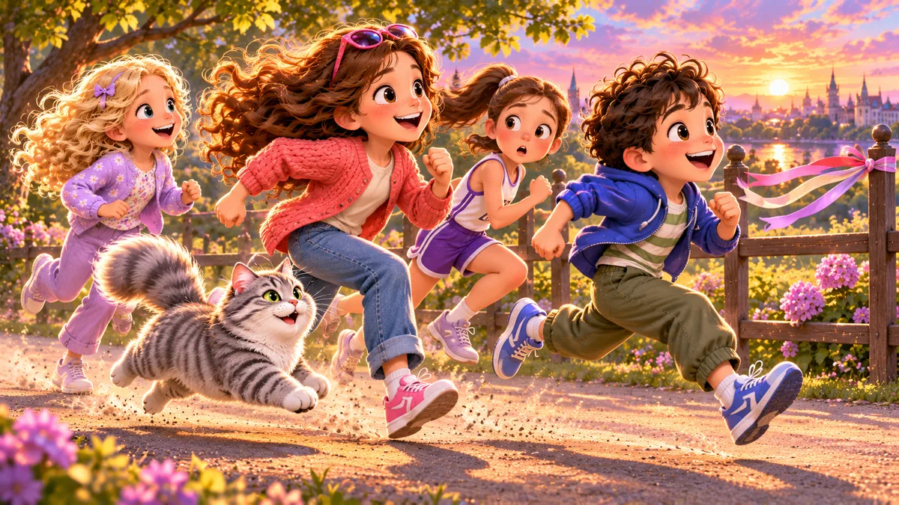
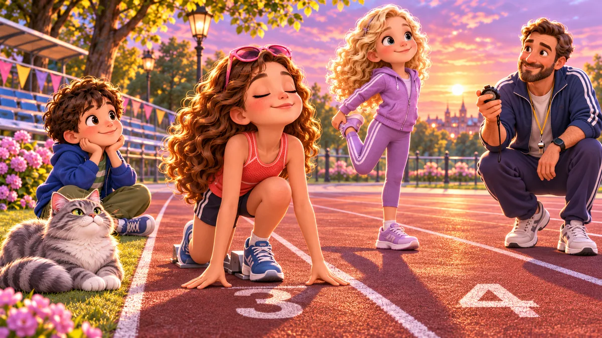
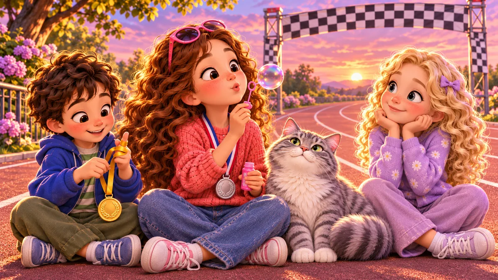

Fifteen sections, fifteen different exercise types. Vocab with sound · a listening story + True/False · a short reading with comprehension Qs · a grammar MCQ with explanation after every click · a word-order builder · gap-fills with word pools · matching · a dialogue · listen-and-type · a diary · a mic-drill. Every section ends with a speaking block — you don't finish an exercise until you've said something out loud.
16 fresh words from November (bubble, race, luck). 8 review words from earlier months. Tap the card to see the Russian + example. Tap ▶ to hear the word.
Press play. Listen without reading first. Then answer. If you missed something, play it a second time — it's OK.

Read the short text. Then choose the right option. If you want to hear it first, tap play.
Emma visits the Pet Shop.
Last Saturday Julia and Emma went to the pet shop. They wanted to see Turbo the snail again. The shopkeeper, Mr Brown, was feeding a parrot. "Good morning, girls! How is Turbo?" he asked. "He's very happy," said Julia. "He loves his green leaves."
Emma pointed at a cage of kittens. "Look, Julia! Can we have one?"
"Maybe one day," Julia laughed. "But first, let's buy more leaves for Turbo."
Ten questions covering all ten futures. Choose an option — a short explanation appears so you see WHY it's that form, not just what.
Click a word to put it into the next empty slot. Click a filled slot to remove the word. Then press Check.

Tap a verb-form in the bank, then tap the gap. Tap a filled gap to remove. Then press Check.
Click an idiom, then click its meaning. Correct pair goes green. Wrong pair shakes.

Tap a word, tap a gap. Tap a filled gap to remove.
Julia: Good morning, Mr Brown! __ see Turbo the __, please?
Mr Brown: Of course! He is in the small __ near the window.
Julia: He looks happy. What do I need to __ him this week?
Mr Brown: Fresh green __ — about one small bag.
Julia: Great. I will __ two bags, please. How much?
Mr Brown: Three __, please. A little gift for a good little __!
Tap ▶ to hear the past form. Type it in the box. The system compares your spelling.
Click English word, click Russian meaning. Correct → green. Wrong → shake.

Three columns. Click a country, click its nationality, click its capital. All three matched = green triple.
will and because.Write a small diary entry about a day you were lucky. Use Past Simple + at least ONE luck idiom + at least ONE Past Continuous.
No typing. No ticking. Just speak each answer for about 20–30 seconds, out loud, to Mum or to an empty room.
Pin this on the fridge. Everything we studied, in one place.
| # | Form | When to use | Example |
|---|---|---|---|
| 1 | will | wish · promise · decision now | I will travel to London one day. |
| 2 | going to | decided plan · evidence | We're going to blow a giant bubble. |
| 3 | Pres. Continuous | fixed arrangement · time + person | I'm meeting Emma at ten. |
| 4 | Pres. Simple | schedule · timetable | The race starts at 10:30. |
| 5 | If … will … | first conditional | If I win, I will blow a bubble. |
| 6 | might / could | maybe · soft possibility | I might be third. |
| 7 | Shall we…? | polite suggestion | Shall we do it again? |
| 8 | be about to | any second now | The sun was about to pop out. |
| 9 | will be V-ing | Future Continuous | Coach will be bringing new stopwatches. |
| 10 | will have V3 | Future Perfect · done by then | You will have beaten this time. |
A classic spelling capsule to wrap up. Tap ▶ to hear the word. Read the Russian. Type the English spelling. Check all at the end.